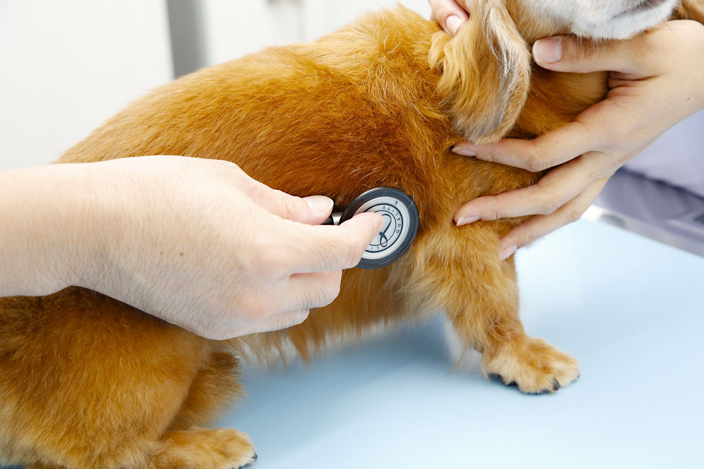

「ワクチンだけ」「説明だけ」
でも、
私にとっては
大きな助けになります。
ブランクがあっても、週3日からでも構いません。
- 週3日から
- 午前だけの勤務も可
- パートは残業なし
- ブランクのある方も歓迎
- 見学歓迎
院長からのメッセージ
ルークどうぶつ病院院長の小川です。私は流れ作業のような診察や、数をこなす診療が嫌で、飼い主様と動物に向き合うために開業しました。自分1人でできる範囲で、と思って始めた病院です。
ありがたいことに、今は多くの飼い主様に来ていただき、自分1人では対応できなくなってきました。本当は、飼い主様の1人1人、動物の1頭1頭と向き合いたいと考えています。ただ、獣医師は私1人です。もう少しお話を聞きたいと思っても、長くお待たせしている次の飼い主様が気になって、ここで切り上げないと、と思ってしまうことがあります。獣医師が1人である以上、今以上のことができなくなっています。
自分1人が無理をするのは簡単です。でも、一緒に働く従業員には無理はさせられません。だからこそ、一緒に飼い主様と向き合ってくれる獣医師を探しています。当院で獣医師を採用するのは、今回が初めてです。
ブランクがあっても構いません。フルタイムで勤務できなくても構いません。獣医師資格を持っていて、空いている時間を有効に使いたいという方も歓迎します。動物の役に立ちたい方、無理をせず1つの病院で長く落ち着いて働きたい方に来ていただけたら、何よりうれしく思います。
ルークどうぶつ病院 院長 小川 誠
お願いしたいこと
当院は町医者です。町医者の役割は、飼い主様の不安を取り除くことにあると考えています。
先生にお願いしたいのは、次の診療です。
- ワクチンなどの予防診療
- 健康相談
- フードの相談
- お薬の説明
- 検査結果の説明
まずは、私が診察した内容のご説明からお願いできればと考えています。「ワクチンだけ」「フードの相談だけ」「検査結果の説明だけ」でも、私にとっては大きな助けになります。私が手が離せないときに、無理なくできる範囲で、私の代わりに飼い主様と向き合っていただけたらと思っています。

院長が担当すること
難しい症例と手術は、私が担当します。
当院は順番予約制です。急患以外は、どなたが来院されるかが事前にある程度分かります。そのため、どの診察をお任せするかは、内容を見ながら相談して決めます。万が一、診察の途中で難しいと感じたら、途中から私が代わることもできます。
私は好きで学会や研修に参加し、勉強を重ねています。先生は今のままで、もちろん大丈夫です。
経歴
- 山口大学農学部獣医学科 卒業
- 奈良動物二次診療クリニック 研修修了
- iVEAT 腹部超音波検査実習 修了
- 麻酔ブートキャンプ 修了
- 近畿動物医療研修センター 心エコー研修 修了
所属学会
- 日本獣医循環器学会
- 日本獣医がん学会
- 日本獣医麻酔外科学会
- 日本獣医歯科学会
入職後の流れ
- 院長の診察の補助に入るまずは私の診察の補助に入っていただきます。
- できることを話し合う何をどこまでできそうかを、先生と話し合って決めます。
- 決めた範囲から担当する決めた範囲から、少しずつ担当していただきます。
補助の期間は決めていません。状況を見ながら、一緒に判断していきましょう。決して無茶ぶりはしません。
安心して働ける理由
院長が休みの日は休診です
私が休みの日は、休診にする予定です。相談のうえで、1人で対応できそうということになれば、お任せする日も出てくるかもしれません。その場合も、決して押し付けたりはしません。
いつでも相談していただけます
迷ったときは、いつでも私に相談できます。手術中でも、随時相談に応じます。
急なお休みも大丈夫
お子さんの急な発熱などで休むときは、もちろんお休みいただいて構いません。当院には子どもがいるスタッフもいますし、私も3人の子どもの父親です。
勤務時間は延びません
診察の混み具合は日によって大きく異なります。午前の診察が長引く日は一緒に頑張っていただきたいのですが、予定している勤務時間から延びることはありません。パートの方は残業なしです。
当院のスタッフたち
看護師5名、トリマー1名が在籍しています。自分で言うのもなんですが、当院の従業員はみなよい子ばかりです。忙しく大変なときでも、いつも私を助けてくれています。
ルークの診療方針
- 思いやりをもって誠実に話ができない動物だからこそ、より誠実に向き合います。
- 「ちょっとルーク行ってみよう」と気軽に通える病院に「なんだかいつもと違う気がする」の「なんだか」を大事にしています。
- 代わりのいない1/1の存在目の前の患者さんは、ご家族にとって代わりのいない1/1の存在です。ひとつ、ひとつ、真摯に向き合います。
- スタッフも輝くようにスタッフが輝いている病院は、患者さんとご家族にも笑顔を届けられると思います。
- 笑顔の連鎖が続いていくように患者さん、ご家族、スタッフ、さらにその周りへと、笑顔の輪が広がっていくことを願っています。
働き方
- 週3日程度から勤務できます。曜日は柔軟に対応します。面接で相談しながら決めましょう。
- 午前だけの勤務もできます。9:00〜16:30前後の勤務もできます。
- パートの方は残業なしです。
- 休診日は木曜と日曜です。
- ダブルワークもできます。ただし、今ほかの病院で小動物臨床をされている場合は、その病院と当院との距離によって相談させてください。
1日の流れ
- 午前の診察
- 手術の時間手術は毎日行っています。スタッフはこの時間に休憩を取っています
- 午後の診察
見学・お問い合わせ
見学は大歓迎です。お互いに一緒に働けるかを確かめに、病院の雰囲気を見にお越しください。まずはお話を聞くだけでも構いません。「ブランクが長いけれど大丈夫か」「週何日から働けるか」といったご相談だけでも構いません。
見学から入職までの流れ
- お問い合わせフォームかお電話でお問い合わせ
- 見学病院の雰囲気を見て、お話を聞いていただきます
- 面接勤務する曜日や時間を相談します
- 入職
募集要項
- 職種
- 獣医師
- 雇用形態
- パート
- 仕事内容
- 犬・猫の一般診療のうち、予防診療、健康相談、フードの相談、お薬の説明、検査結果の説明
- 給与
- 時給2,000円程度（昇給あり）
- 勤務日数
- 週3日程度から（曜日は相談して決めます）
- 勤務時間
- 午前のみ、または9:00〜16:30前後の勤務も可
- 残業
- なし
- 休診日
- 木曜、日曜
- 待遇
- 交通費支給、社会保険あり、車通勤可
- 応募資格
- 獣医師免許をお持ちの方（ブランクのある方も歓迎）
- 勤務地
- 京都府京田辺市三山木中央5-2-1 コスモヴィレッジ1階
よくあるご質問
採血やレントゲン、エコーは自分で行うのですか？
採血とレントゲンはお願いしたいと考えています。エコーは、できる範囲で構いません。
お薬やフードの説明は、院長と同じにする必要がありますか？
大筋が違っていなければ、私とまったく同じでなくても問題ありません。
電子カルテは何を使っていますか？
アニコムレセプターを使っています。
研修や学会への参加は必要ですか？
必要ありません。今のままで、もちろん大丈夫です。